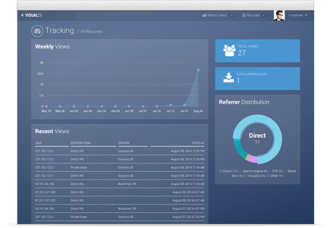

Get your VisualCV Today
Free Sign-up. No Credit Card Required.
Wondering why you need a VisualCV if you already have a LinkedIn profile? Not sure if LinkedIn is right for you? Are you looking for a Linkedin Alternative? We understand that deciding where to host your online profile is a big decision, so we’ve put together some info that will help you decide which option is best for you, or if it makes sense to have both a LinkedIn and VisualCV account. Below you’ll find information that will help you compare VisualCV and LinkedIn including features, experiences, pricing, and privacy policies.
Login to your LinkedIn profile - what do you see?
A barrage of advertisements, news articles, messages, and updates from people you barely know. It’s overwhelming.
With VisualCV, your senses won’t be offended. All you see when you login is your dashboard. It has all your different resume versions and view statistics. That’s it. Simple, right?
VisualCV enables you to create custom profiles for whatever you’re looking for professionally. You can change your profile to suit the job or contract you’re looking for.
 You’ll get awesome features like multiple resume designs, online portfolio support, and a separate URL for each profile.
You’ll get analytics to know who’s viewed each profile, and tools for exporting into an application-friendly format.
All this - without advertisements, news feeds, or an overloaded inbox.
You’ll get awesome features like multiple resume designs, online portfolio support, and a separate URL for each profile.
You’ll get analytics to know who’s viewed each profile, and tools for exporting into an application-friendly format.
All this - without advertisements, news feeds, or an overloaded inbox.
I can't thank you enough! I've uploaded my CV onto various job sites and the amount of responses I received is amazing!
To get what you’re looking for in the job market you need a targeted approach. Most recruiters won’t look at a resume that hasn’t been customized for the application. Same goes with looking for contract work - a custom profile tailored to the customer's needs is the most effective way to sell your unique skillset. VisualCV makes it easy to create a custom, targeted profile in minutes. You can even track each profile to see if it has been viewed.  You should never apply to a job or a contract with a LinkedIn profile. Here’s why:
VisualCV is a secure and effective way to create the right profile for the job. You can simply copy an existing VisualCV, edit it to fit the application, and publish a new, secure version in minutes to the web or PDF.
I've actually secured two gigs in the short time since I made my CV. So glad that I made the investment.
We're here to serve one customer: You, the professional. With LinkedIn - you are the product. LinkedIn makes money from recruiter subscriptions, paid advertisements, and job postings. Like we said, we’re here to serve you. These are the privacy rules we stand by: Your data is yours. You own all the data on the VisualCV platform - and can delete it (and your account) anytime. We DO NOT sell data to third parties or advertisers. You're in full control of privacy. You can set your VisualCV's to be public or private, and can change your settings anytime. A public CV will be findable on search engines, while a Private CV will not. You can view our privacy overview here .
It’s not often you hear of an online resume being called sexy, but we’re not your typical online profile.
Of course you can always create a standard professional resume for a traditional job application - but we also have design options that really help you stand out from the crowd.
 LinkedIn has 1 standard profile design. And it’s a bit. Well. You be the judge. It desfinitely does not have the "wow" factor.
VisualCV has a variety of designs, from the perfect executive resume to a mind-blowing online portfolio. And you’re not limited to one choice - you can create the perfect profile for the job - every time.
LinkedIn has 1 standard profile design. And it’s a bit. Well. You be the judge. It desfinitely does not have the "wow" factor.
VisualCV has a variety of designs, from the perfect executive resume to a mind-blowing online portfolio. And you’re not limited to one choice - you can create the perfect profile for the job - every time.
We’re a small team that is committed making sure you have an amazing experience with VisualCV. Our customer success team (Often our CEO) checks in with every single customer to answer any questions you may have and helps you get the most out of VisualCV. We’re here every day helping people build their best careers.
Don’t get us wrong - LinkedIn is a valuable tool. For looking for jobs, connecting with recruiters, and remembering who you met at a conference. It doesn’t hurt to have a LinkedIn profile. But if you’re serious about presenting your very best self in every opportunity, VisualCV is your best option. We serve hundreds of thousands of professionals - from high school graduates to high powered CEO’s. And we’d love for you to give us a try.
We hope this comparison was useful to you. Trying VisualCV is easy - you can get started in a few minutes. To sign-up for free, visit VisualCV.com/signup. Our free plan includes 1 classic resume design. For just $6/month, you’ll have access to all our premium resume designs, unlimited resume versions, and resume analytics. We hope to see you soon.
Free Sign-up. No Credit Card Required.